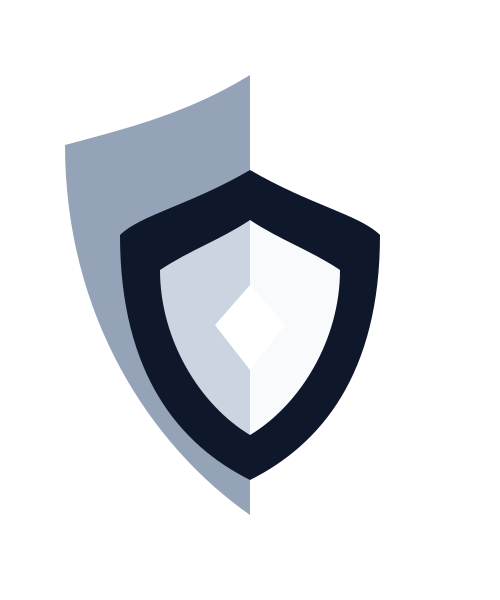

Soluciones eficaces a problemas sofisticados
Ajusta automáticamente la velocidad del escáner para detectar más riesgos sin poner lenta tu red ni activar bloqueos
| # | Dispositivo / hostname | Dirección IP / máscara | MAC / fabricante | Sistema operativo | Latencia | Categoría | Nivel de riesgo |
|---|---|---|---|---|---|---|---|
|
No hay dispositivos auditados aún. Presiona "Iniciar auditoría de red". |
|||||||
Registro cronológico de escaneos y hallazgos persistidos en MariaDB
| # | Fecha y hora | Subred / gateway | Dispositivos | Críticos | Duración | Operador | Estado | Acciones |
|---|---|---|---|---|---|---|---|---|
| Cargando historial de auditorías... | ||||||||
Son tres botones rápidos que ajustan todas las barras por ti según dónde estés trabajando:
• Sigiloso: Va despacio (50 pps = 50 paquetes por segundo) y casi no gasta red. Ideal en oficinas con videollamadas o firewalls estrictos.
• Balanceado: Punto medio ideal (100 pps). Rápido, seguro y ligero para el día a día.
• Agresivo: Doble de velocidad (200 pps). Ideal para laboratorios o pruebas cuando tienes prisa.
Hace que el escáner trabaje "caminando en silencio": envía máximo 50 paquetes por segundo (pps) y ocupa solo 80 KB/s (0.64 Mbps) de red.
Además, dedica al menos la mitad del esfuerzo a buscar las amenazas más peligrosas primero.
Es el equilibrio ideal entre buena velocidad y cero molestias. Reparte el envío mitad y mitad: 50 paquetes por segundo (pps) a puertos peligrosos y 50 pps a puertos normales.
Usa apenas 1.20 Mbps de red local, así que nadie notará lentitud mientras auditas.
Acelera el escáner al doble del ritmo estándar (200 paquetes por segundo y hasta 2.40 Mbps) para terminar toda la revisión en el menor tiempo posible.
Imagina que el escáner suma puntos de utilidad por cada paquete de revisión que logra enviar cada segundo:
• Cada paquete hacia un puerto peligroso (X₁) vale 1.5 puntos porque hallar un fallo ahí es urgente.
• Cada paquete hacia un puerto común (X₂) vale 1.0 punto.
Son la importancia que le das a cada grupo de puertos. Por defecto, 1.5 y 1.0 indican que revisar un puerto peligroso te importa un 50% más que uno común.
Al pulsar el botón Pesos c₁ / c₂ puedes ajustarlos libremente si deseas cambiar esa prioridad.
Los firewalls tienen una alarma (IDS) que bloquea a cualquier equipo que envíe demasiadas pruebas de golpe.
Aquí eliges el tope seguro en pps (paquetes por segundo): cada paquete es una pequeña revisión a un puerto. Mantenerte bajo este límite evita que el router te bloquee.
Es el máximo de velocidad de tu red local que le das permiso de usar al escáner para no afectar a otros usuarios.
Se muestra en KB/s (peso de los paquetes enviados) y su equivalente en Mbps (igual que la velocidad de tu internet). Si no sabes cuánto poner, usa el botón Autocalibrar.
Como los puertos comunes pesan la mitad que los peligrosos, sin esta regla el sistema podría tentarse a enviar solo paquetes ligeros.
Este porcentaje obliga al escáner a dedicar como mínimo esa parte de sus paquetes (ej. 40%) a inspeccionar los puertos más riesgosos.
Indica cuántos pps (paquetes por segundo) enviará el escáner para revisar los 4 puertos más delicados de tus equipos (21, 23, 445 y 3389).
Indica cuántos pps (paquetes por segundo) enviará el escáner hacia los 5 puertos habituales de trabajo diario (SSH 22, DNS 53 y páginas web 80, 443 y 8080).
Es la puntuación total de provecho que logra tu configuración actual respetando los tres límites de la izquierda.
El texto pequeño debajo te indica de forma sencilla qué factores marcaron el punto de equilibrio.
Muestra cuánta velocidad de red ocupará realmente el escáner (en KB/s y en Mbps) y qué porcentaje del margen seguro del firewall aprovechará.
En lugar de adivinar al azar, Python calcula las "esquinas" exactas donde se cruzan tus límites seguros.
Cada etiqueta muestra una combinación válida (críticos pps, comunes pps) → Puntaje Z.
Traduce todos los datos del modelo en una sola explicación cotidiana para confirmar cómo trabajará VulneraSolve cuando pulses "Iniciar auditoría de red".